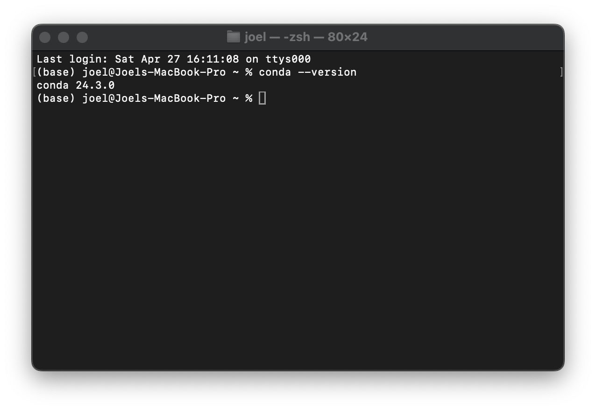
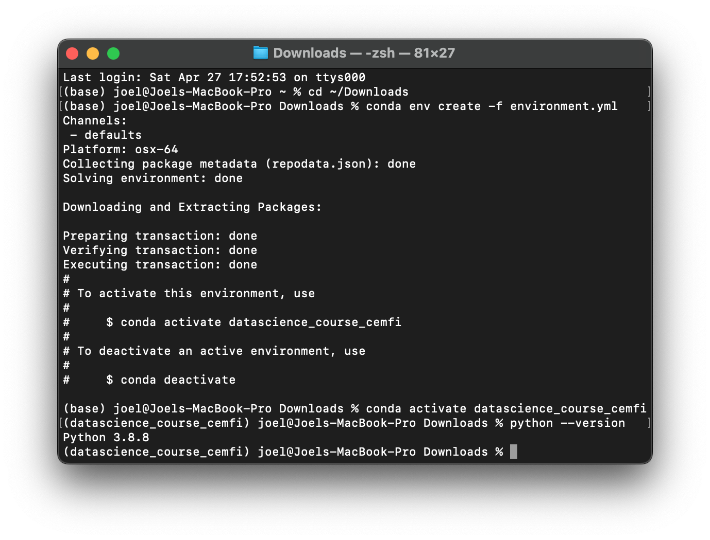
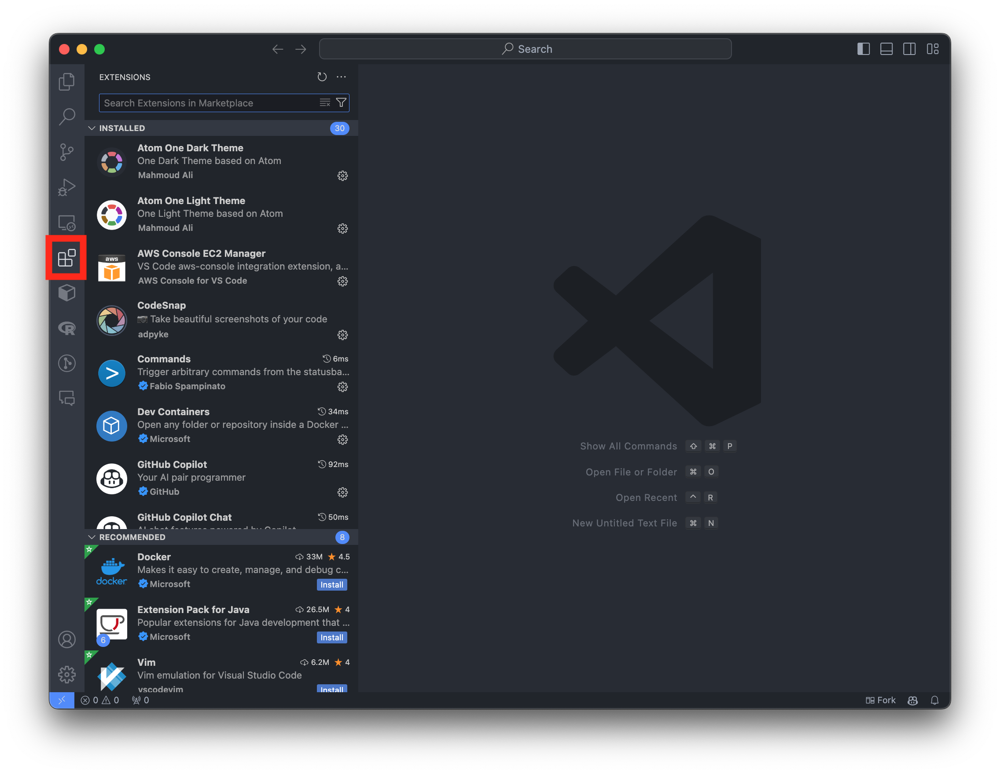
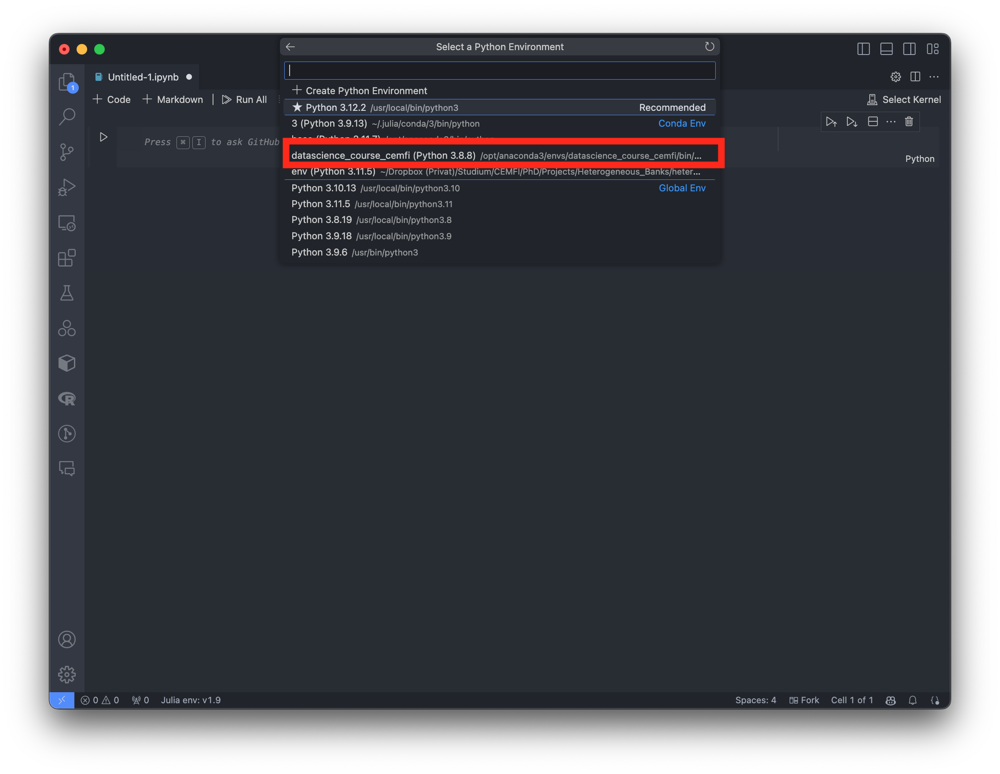

Data Science
Diploma in Banking Supervision (CEMFI)
About this Course
This course serves as an introduction to machine learning techniques used in data science. While we will cover some of the underlying theory to get a better understanding of the methods we are going to use, the emphasis will be on practical implementation. Throughout the course, we will be using the programming language Python, which is the dominant programming language in this field.
The course is divided into two parts. In the first part, we will get a brief overview of the field, cover some basic concepts of machine learning and have a look at some of the most commonly used methods. In the second part, we will apply these methods to real-world problems, which hopefully will give you a starting point for your own projects. The course outline is as follows:
Part I: Overview and Methods
- Introduction to Machine Learning
- Basic Concepts
- Decision Trees
- Neural Networks
- Additional Methods
Part II: Applications
- Loan Default Prediction
- House Price Prediction
The course is designed to be self-contained, meaning that you do not need any prior knowledge of machine learning to follow along.
Useful Resources
The course does not follow a particular textbook but has drawn material from several sources such as
- Hastie, Tibshirani, and Friedman (2009), “The Elements of Statistical Learning”
- Murphy (2012), “Machine Learning: A Probabilistic Perspective”
- Murphy (2022), “Probabilistic Machine Learning: An Introduction”
- Murphy (2023), “Probabilistic Machine Learning: Advanced Topics”
- Goodfellow, Bengio, and Courville (2016), “Deep Learning”
- Bishop (2006), “Pattern Recognition And Machine Learning”
- Nielsen (2019), “Neural Networks and Deep Learning”
- Sutton and Barto (2018), “Reinforcement Learning: An Introduction”
Note that all of these books are officially available for free in the form of PDFs or online versions (see the links in the references). However, you are not required to read them and, as a word of warning, the books go much deeper into the mathematical theory behind the machine learning techniques than we will in this course. Nevertheless, you may find them useful if you want to learn more about the subject.
Regarding programming in Python, McKinney (2022) “Python for Data Analysis” might serve as a good reference book. The book is available for free online and covers a lot of the material we will be using in this course. You can find it here: Python for Data Analysis.
Software Installation Notes
We will be using Python for this course. For simplicity, we will be using the Anaconda distribution, which is a popular distribution of Python (and R) that aims to simplify the management of packages. We will also be using the Visual Studio Code (VS Code) as our code editor.
Anaconda Installation
The first step is to install the Anaconda distribution:
Download the Anaconda distribution from anaconda.com. Note: If you are using a M1 Mac (or newer), you have to choose the 64-Bit (M1) Graphical Installer. With an older Intel Mac, you can choose the 64-Bit Graphical Installer. With Windows, you can choose the 64-Bit Graphical Installer (i.e., the only Windows option).
Open the installer that you have downloaded in the previous step and follow the on-screen instructions.
If it asks you to update Anaconda Navigator at the end, you can click
Yes(to agree to the update),Yes(to quit Anaconda Navigator) and thenUpdate Now(to actually start the update).
To confirm that the installation was successful, you can open a terminal window on macOS/Linux or an Anaconda Prompt if you are on Windows and run the following command:
conda --versionThis should display the version of Conda that you have installed. If you see an error message, the installation was likely not successful and you should ask for advice from your peers or send me an email.

Creating a Conda Environment
Next, we want to create a new environment for this course that contains the correct Python version and all the Python packages we need. We can do this by creating a new Conda environment from the environment.yml provided on Moodle.
Open a terminal window on macOS/Linux or an Anaconda Prompt if you are on Windows.
There are two ways to create the Conda environment:
Option A: Run the following command from the terminal or Anaconda Prompt:
conda env create -f https://datascience.joelmarbet.com/environment.ymlThis downloads the
environment.ymlfile automatically and creates the environment.Option B: Download the
environment.ymlfile manually:Navigate to the folder where you have downloaded the
environment.ymlfile. On macOS/Linux, you can do this by running the following command in the terminal:cd ~/Downloadswhich will navigate to the
Downloadsfolder in your home directory.On Windows, you can do this by running the following command in the Anaconda Prompt:
cd "%userprofile%/Downloads"which will navigate to the
Downloadsfolder in your user profile.Note that if you use a different path that contains space you need to put the path in quotes, e.g.,
cd "~/My Downloads".Create a new Conda environment from the
environment.ymlfile by running the following command in the terminal or Anaconda Prompt:conda env create -f environment.yml
Either option will create a new Conda environment called
datascience_course_cemfiwith the correct Python version and all the Python packages we need for this course. Note that the installation might take a few minutes.Activate the new Conda environment by running the following command in the terminal or Anaconda Prompt:
conda activate datascience_course_cemfi
To confirm that the environment was created successfully, you can run the following command in the terminal or Anaconda Prompt:
python --versionThis should display Python version 3.8.8. If you see another Python version you might have forgotten to activate the environment or the environment was not created successfully.

If you accidentally make changes to the environment and want to reset it to the original state, you can do this by navigating to the folder where you have downloaded environment.yml and then running the following command in the terminal or Anaconda Prompt:
conda env update --file environment.yml --pruneAlternatively, you can also update the environment by running the following command in the terminal or Anaconda Prompt, which downloads the environment.yml file automatically from the course website:
conda env update --file https://datascience.joelmarbet.com/environment.yml --pruneThis can also be used to update the environment if we add new packages to the environment.yml file.
Installing VS Code
The last step is to install the Visual Studio Code (VS Code) editor:
- Download the Visual Studio Code editor from code.visualstudio.com.
- Open the installer that you have downloaded in the previous step and follow the on-screen instructions.
We also need to install some VS Code extensions that will help us with Python programming and Jupyter notebooks:
Open VS Code.
Click on the
Extensionsicon on the left sidebar (or pressCmd+Shift+Xon macOS orCtrl+Shift+Xon Windows).
Installing Extensions in VSCode Search for
Pythonand click on theInstallbutton for the extension that is provided by Microsoft.Search for
Jupyterand click on theInstallbutton for the extension that is provided by Microsoft.
Testing the Installation
To test the installation, you can download a Juypter notebook from Moodle and open it in VS Code:
Open the Jupyter notebook in VS Code.
Click on
Select Kernelin the top right corner of the notebook and choose thedatascience_course_cemfikernel.
VSCode Jupyter Kernel Selection Run the first cell of the notebook by clicking on the
Execute Cellbutton next to the cell on the left.
If you see the output of the cell (or a green check mark below the cell), the installation was successful.
If you have issues running Jupyter notebooks in VSCode, you can also run them in the browser. To do this, you can open a terminal window on macOS/Linux or an Anaconda Prompt if you are on Windows and run the following command:
jupyter notebookThis will open a new tab in your default browser with the Jupyter notebook interface. You can then navigate to the folder where you have downloaded the course materials and open the notebooks from there.